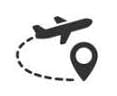

Sky Zone Hyderabad is one-of-a-kind and India’s first indoor trampoline park in the town, covering 30,000 sq. ft and offers world-class trampoline attractions, and high-flying excitement for any group.
The park is one of the few spots in Hyderabad where individuals may spend quality time playing games and participating in activities.
It was introduced by ‘Rick Plat‘ and the present CEO of Sky Zone ‘Jeff Platt‘ and later sold to ‘Circus Trix‘ an American Company.
Mr. Ram Talluri is the person behind bringing the first trampoline park to India, with an aim to provide high-quality entertainment services to people all over India. The first venture of Sky Zone park in India was launched at Gandipet, Hyderabad. Recently another park was opened at Kondapur.
Now prepare to be amazed by the energetic games and have even more fun with the magnificent activity zones at this Hyderabad Trampoline Park. Sky Zone is filled with thrilling jump activities and entertainment options.
How to reach:

By Air
The nearest airport is in hyderabad
By Train
The nearest railways is in hyderabad
By Road
skyzone, the most famous tourist destination in Hyderabad, can be used as a landmark. A bus,cab,local rickshaw can also be taken to reach the capital.